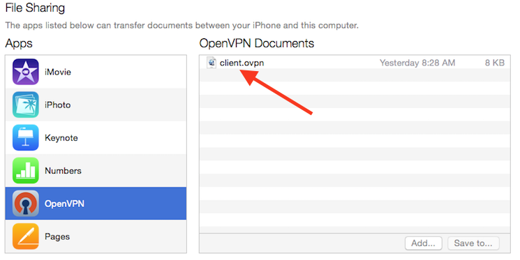
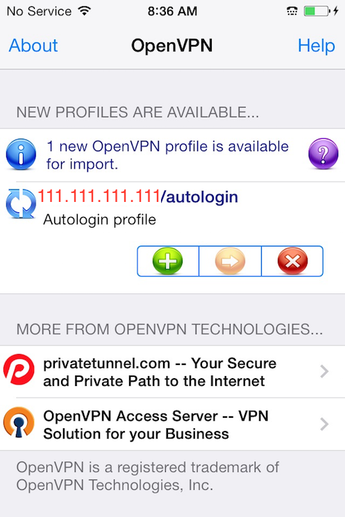
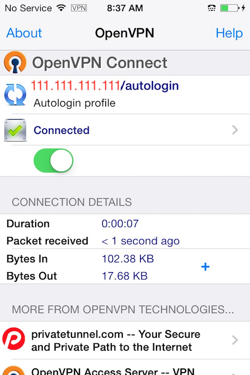
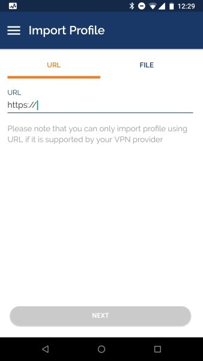
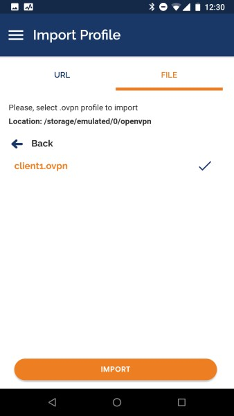
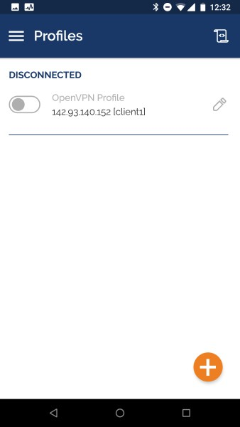
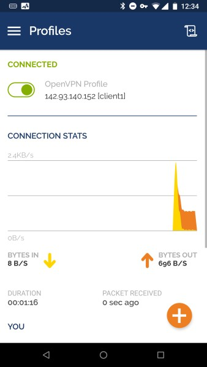

TUTORIAL
Установка и настройка сервера OpenVPN в Ubuntu 20.04
Русский
Введение
Виртуальная частная сеть (VPN) позволит вам работать в незащищенных сетях, как если бы вы находились в частной сети. Она предоставляет возможность получить безопасный и защищенный доступ к сети Интернет со смартфона или ноутбука при подключении к недоверенной сети, например Wi-Fi в отеле или в кафе.
В сочетании с соединениями HTTPS данная схема позволяет защитить учетные данные и транзакции в беспроводной сети. Вы можете обойти географические ограничения и цензуру и скрыть свое местоположение, а также любой незашифрованный трафик HTTP при работе в незащищенной сети.
OpenVPN — это полнофункциональное решение VPN с открытым исходным кодом, которое использует протокол TLS и позволяет использовать широкий круг конфигураций. В этом обучающем руководстве мы установим OpenVPN на сервере Ubuntu 20.04 и настроим его для доступа с клиентского компьютера.
Примечание. Если вы планируете настроить сервер OpenVPN на DigitalOcean Droplet, то мы, как и многие поставщики хостинга, будем взимать плату за превышение лимита пропускной способности. По этой причине необходимо следить за объемом трафика, который обрабатывает ваш сервер.
Дополнительную информацию можно найти на этой странице.
Предварительные требования
Для данного обучающего руководства вам потребуется следующее:
Примечание. Хотя технически возможно использовать ваш сервер OpenVPN или ваш локальный компьютер в качестве центра сертификации, делать это не рекомендуется, поскольку это открывает ваш VPN для ряда уязвимостей. Согласно официальной документации OpenVPN, вы должны разместить ЦС на отдельном компьютере, который будет отвечать за импорт и подписание запросов сертификатов. По этой причине в данном обучающем модуле предполагается, что ваш ЦС располагается на отдельном сервере Ubuntu 20.04, где также имеются пользователь без привилегий root с привилегиями sudo и базовый брандмауэр.
Помимо этого вам потребуется клиентский компьютер, который вы будете использовать для подключения к вашему серверу OpenVPN. В этом обучающем руководстве мы будем называть его клиентом OpenVPN. В целях данного руководства рекомендуется использовать ваш локальный компьютер в качестве клиента OpenVPN.
После выполнения всех предварительных требований вы можете начать установку и настройку сервера OpenVPN в Ubuntu 20.04.
Примечание. Обратите внимание, что если вы отключите аутентификацию с помощью пароля при настройке этих серверов, то можете столкнуться с трудностями при передаче файлов между ними, как предусматривается последующими разделами этого обучающего руководства. Чтобы устранить эту проблему, вам нужно будет заново включить аутентификацию с помощью пароля на каждом сервере. Также вы можете сгенерировать пару ключей SSH для каждого сервера и добавить публичный ключ SSH сервера OpenVPN в файл authorized_keys на компьютере ЦС, и наоборот. Дополнительные инструкции по этим решениям можно найти в обучающем модуле Настройка ключей SSH в Ubuntu 20.04.
Шаг 1 — Установка OpenVPN и Easy-RSA
Первый шаг этого руководства подразумевает установку OpenVPN и Easy-RSA. Easy-RSA — это инструмент управления инфраструктурой открытых ключей (PKI), который вы будете использовать на сервере OpenVPN для генерации запроса сертификата, который вы затем будете проверять и подписывать на сервере ЦС.
Для начала обновите указатель пакетов сервера OpenVPN и установите OpenVPN и Easy-RSA. Оба пакета доступны в репозиториях Ubuntu по умолчанию, и поэтому вы можете использовать apt для установки:
Copy
Далее вам потребуется создать новую директорию на сервере OpenVPN от имени вашего пользователя non-root user с названием ~/easy-rsa:
Copy
Теперь вам нужно создать символьную ссылку из скрипта easyrsa, установленного пакетом в директории ~/easy-rsa, которую вы только что создали:
Copy
Примечание. Хотя другие руководства могут предписывать скопировать файлы пакета easy-rsa в директорию PKI, в этом обучающем руководстве мы используем подход на основе символьных ссылок. Таким образом, любые изменения пакета easy-rsa будут автоматически отражаться в ваших скриптах PKI.
В заключение убедитесь, что владельцем директории является ваш пользователь non-root user с привилегиями sudo, и ограничьте доступ с помощью команды chmod:
Copy
После установки этих программ и их перемещения в нужные локации в вашей системе следующим шагом будет создание инфраструктуры открытых ключей (PKI) на сервере OpenVPN, чтобы вы могли запрашивать и управлять сертификатами TLS для клиентов и других серверов, которые будут подключаться к вашему VPN.
Шаг 2 — Создание PKI для OpenVPN
Прежде чем вы сможете создавать закрытый ключ и сертификат вашего сервера OpenVPN, вам нужно создать локальную директорию инфраструктуры открытых ключей на сервере OpenVPN. Вы будете использовать эту директорию для управления запросами сертификата сервера и клиентов, вместо того чтобы получать их прямо на сервере ЦС.
Для создания директории PKI на сервере OpenVPN вам нужно указать в файле vars ряд значений по умолчанию. Используйте команду cd для перехода в каталог easy-rsa, а затем создайте и отредактируйте файл vars с помощью nano или другого предпочитаемого текстового редактора:
Copy
После открытия файла вставьте следующие две строки:
~/easy-rsa/vars
set_var EASYRSA_ALGO "ec"
set_var EASYRSA_DIGEST "sha512"
Эти две строки потребуются вам в файле vars на сервере OpenVPN, поскольку он не будет использоваться в качестве ЦС. Они будут гарантировать, что ваши закрытые ключи и запросы сертификата будут настроены для использования современной криптографии на эллиптических кривых (Elliptic Curve Cryptography, ECC) при генерации ключей и защищенных подписей для ваших клиентов и сервера OpenVPN.
Под настройкой использования ECC для ваших серверов OpenVPN и ЦС подразумевается, что, когда клиент и сервер будут пытаться установить общий симметричный ключ, они будут использовать алгоритмы эллиптической кривой для обмена. Использование ECC для обмена ключами значительно быстрее, чем использование простого алгоритма Диффи — Хеллмана с классическим алгоритмом RSA, поскольку числа намного меньше, а вычисления выполняются быстрее.
Справка: когда клиенты подключаются к OpenVPN, они используют асимметричное шифрование (также известное как открытый/закрытый ключ) для выполнения TLS-рукопожатия. Однако при передаче шифрованного VPN-трафика сервер и клиенты используют симметричное шифрование, которое также известно как шифрование общедоступного ключа.
Симметричное шифрование требует гораздо меньшего количества вычислений по сравнению с асимметричным: используемые числа гораздо меньше, и современные процессоры имеют инструкции для выполнения оптимизированного симметричного шифрования. Для переключения с асимметричного на симметричное шифрование сервер OpenVPN и клиент будут использовать алгоритм Диффи — Хеллмана на эллиптических кривых для согласования общего секретного ключа в максимально короткие сроки.
После добавления в файл vars данных вы можете перейти к созданию директории PKI. Для этого воспользуйтесь скриптом easyrsa с опцией init-pki. Хотя вы уже использовали эту команду на сервере ЦС в соответствии с предварительными требованиями, необходимо запустить ее здесь, поскольку сервер OpenVPN и сервер ЦС имеют разные директории PKI.
Copy
Обратите внимание, что на сервере OpenVPN не нужно создавать центр сертификации. Ваш сервер ЦС отвечает за валидацию и подпись сертификатов. PKI на вашем сервере VPN используется только в качестве удобного и централизованного места хранения запросов сертификата и публичных сертификатов.
После инициализации PKI на сервере OpenVPN вы можете перейти к следующему шагу и создать запрос сертификата и закрытого ключа сервера OpenVPN.
Шаг 3 — Создание запроса сертификата и закрытого ключа сервера OpenVPN
Теперь, когда на вашем сервере OpenVPN установлено все необходимое, на следующем шаге мы сгенерируем закрытый ключ и запрос подписи сертификата на вашем сервере OpenVPN. После этого вы передадите запрос в ваш центр сертификации для подписи, создав необходимый сертификат. После подписи сертификата вы передадите его назад на сервер OpenVPN и установите его для использования на сервере.
Для начала перейдите в директорию ~/easy-rsa на сервере OpenVPN, используя вашего пользователя non-root user:
Copy
Теперь вы можете вызвать easyrsa с опцией gen-req, за которой необходимо указать стандартное имя для компьютера. Вы можете использовать любое стандартное имя, но лучше всего выбрать запоминающийся вариант. В этом обучающем руководстве для сервера OpenVPN будет использоваться стандартное имя server. Обязательно добавьте опцию nopass. Без этого файл запроса будет защищен паролем, что впоследствии может привести к проблемам с разрешениями.
Примечание. Если вы выберете любое другое имя, а не server, вы должны будете следовать некоторым из приведенных ниже инструкций с изменениями. Например, при копировании сгенерированных файлов в директорию /etc/openvpn вам нужно будет указать правильные имена. Позднее вам нужно будет изменить файл etc/openvpn/server.conf, чтобы он указывал на соответствующие файлы .crt и .key.
Copy
OutputCommon Name (eg: your user, host, or server name) [server]:
Keypair and certificate request completed. Your files are:
req: /home/sammy/easy-rsa/pki/reqs/server.req
key: /home/sammy/easy-rsa/pki/private/server.key
В результате будет создан закрытый ключ для сервера и файл запроса сертификата с именем server.req. Скопируйте ключ сервера в директорию /etc/openvpn/server:
Copy
В результате выполнения этих шагов вы успешно создали закрытый ключ для вашего сервера OpenVPN. Также вы создали запрос на подпись сертификата для сервера OpenVPN. Запрос на подпись сертификата теперь готов к подписи в вашем центре сертификации. В следующем разделе этого обучающего руководства вы узнаете, как подписать запрос на подпись сертификата с помощью закрытого ключа вашего сервера ЦС.
Шаг 4 — Подпись запроса сертификата сервера OpenVPN
На предыдущем шаге вы создали запрос на подпись сертификата (CSR) и закрытый ключ для сервера OpenVPN. Теперь сервер ЦС должен узнать о сертификате server и выполнить его валидацию. После подтверждения сертификата сервером ЦС и его отправки назад на сервер OpenVPN клиенты, которые доверяют вашему ЦС, также смогут доверять серверу OpenVPN.
На сервере OpenVPN от имени вашего пользователя non-root user воспользуйтесь запросом на передачу или другим методом передачи для копирования запроса сертификата server.req на сервер ЦС для подписи:
Copy
Если вы выполнили предварительное требование обучающего модуля «Установка и настройка Центра сертификации (ЦС) в Ubuntu 20.04», следующим шагом будет войти на сервер ЦС как пользователь без привилегий root, которого вы создали для управления ЦС. Вы использовали команду cd для перехода в каталог ~/easy-rsa, где вы создали и импортируйте запрос сертификата с помощью скрипта easyrsa:
Copy
Output. . .
The request has been successfully imported with a short name of: server
You may now use this name to perform signing operations on this request.
Далее подпишите запрос, запустив скрипт easyrsa с опцией sign-req и указанием типа запроса и стандартного имени. В качестве типа запроса может использоваться client или server. Поскольку мы работаем с запросом сертификата сервера OpenVPN, необходимо использовать тип запроса server:
Copy
В выводе вам будет нужно подтвердить, что запрос поступил из надежного источника. Введите yes, а затем нажмите ENTER для подтверждения:
OutputYou are about to sign the following certificate.
Please check over the details shown below for accuracy. Note that this request
has not been cryptographically verified. Please be sure it came from a trusted
source or that you have verified the request checksum with the sender.
Request subject, to be signed as a server certificate for 3650 days:
subject=
commonName = server
Type the word 'yes' to continue, or any other input to abort.
Confirm request details: yes
. . .
Certificate created at: /home/sammy/easy-rsa/pki/issued/server.crt
Обратите внимание, что если вы зашифровали закрытый ключ ЦС, вам будет предложено ввести пароль в данный момент.
В результате выполнения этих шагов вы успешно подписали запрос сертификата сервера OpenVPN с помощью закрытого ключа сервера ЦС. Полученный файл server.crt содержит открытый ключ шифрования сервера OpenVPN, а также новую подпись от сервера ЦС. Смысл подписи состоит в том, чтобы сообщить всем, кто доверяет серверу ЦС, что они также могут доверять серверу OpenVPN при подключении к нему.
Для завершения настройки сертификатов скопируйте файлы server.crt и ca.crt с сервера ЦС на сервер OpenVPN:
Copy
Теперь вернитесь на ваш сервер OpenVPN, скопируйте файлы из /tmp в /etc/openvpn/server:
Copy
Теперь ваш сервер OpenVPN почти готов к принятию подключений. На следующем шаге вы выполните ряд дополнительных шагов для повышения безопасности сервера.
Шаг 5 — Настройка криптографических материалов OpenVPN
В качестве дополнительного уровня безопасности мы добавим дополнительный общий секретный ключ, который будет использовать сервер и все клиенты, с помощью директивы OpenVPN tls-crypt. Эта опция используется, чтобы «затемнить» сертификат TLS, используемый, когда сервер и клиент первоначально подключаются друг к другу. Также она используется сервером OpenVPN для выполнения быстрых проверок входящих пакетов: если пакет подписан с помощью предварительно предоставленного ключа, сервер обрабатывает его, если подпись отсутствует, сервер понимает, что пакет получен из непроверенного источника, и может отклонить его, не выполняя дополнительную работу по расшифровке.
Эта опция поможет убедиться, что ваш сервер OpenVPN может справляться с неудостоверенным трафиком, сканированием портов и DoS-атаками, которые могут связывать ресурсы сервера. Она также затрудняет выявление сетевого трафика OpenVPN.
Для получения предварительно предоставленного ключа tls-crypt запустите следующую команду на сервере OpenVPN в директории ~/easy-rsa:
Copy
В результате вы получите файл с именем ta.key. Скопируйте его в директорию /etc/openvpn/server/:
Copy
После получения этих файлов на сервере OpenVPN вы можете переходить к созданию клиентских сертификатов и файлов ключей для ваших пользователей, которые вы будете использовать для подключения к VPN.
Шаг 6 — Создание сертификата клиента и пары ключей
Хотя вы можете сгенерировать закрытый ключ и запрос сертификата на клиентской системе и отправить их в ЦС для подписания, в этом обучающем руководстве мы рассмотрим процесс генерирования запроса сертификата на сервере OpenVPN. Преимущество этого подхода заключается в том, что мы можем создать скрипт, который будет автоматически генерировать файлы конфигурации клиентов, содержащие все необходимые ключи и сертификаты. Благодаря этому вам не нужно будет передавать ключи, сертификаты и файлы конфигурации на клиентские системы, и процесс подключения к VPN ускорится.
В этом обучающем руководстве мы создадим одну пару из ключа и сертификата для клиентской системы. Если у вас несколько клиентских систем, вы можете повторить этот процесс для каждой такой системы. Обратите внимание, что для каждого клиента в скрипте нужно указать уникальное имя. В этом обучающем руководстве мы будем использовать первую пару сертификат/ключ под именем client1.
Вначале создайте в домашней директории структуру директорий, где будут храниться файлы сертификатов и ключей клиентской системы:
Copy
Поскольку в этой директории будут храниться пары сертификат/ключ ваших клиентов и файлы конфигурации, для нее следует закрыть все разрешения:
Copy
Вернитесь в директорию EasyRSA и запустите скрипт easyrsa с опциями gen-req и nopass, указав обычное имя клиента:
Copy
Нажмите ENTER, чтобы подтвердить обычное имя. Скопируйте файл client1.key в ранее созданную директорию ~/client-configs/keys/:
Copy
Затем передайте файл client1.req на сервер ЦС, используя безопасный метод:
Copy
Теперь выполните вход на ваш сервер ЦС. Затем перейдите в директорию EasyRSA и импортируйте запрос сертификата:
Copy
Затем подпишите запрос, как вы делали это для сервера на предыдущем шаге. Однако в этот раз обязательно укажите тип запроса client:
Copy
При запросе введите yes, чтобы подтвердить, что вы планируете подписать запрос сертификата и что он поступил из доверенного источника:
OutputType the word 'yes' to continue, or any other input to abort.
Confirm request details: yes
Если вы зашифровали свой ключ ЦС, вам будет предложено ввести пароль.
В результате будет создан файл клиентского сертификата с именем client1.crt. Переместите этот файл обратно на сервер.
Copy
Вернитесь на ваш сервер OpenVPN, скопируйте клиентский сертификат в директорию ~/client-configs/keys/:
Copy
Затем скопируйте файлы ca.crt и ta.key в директорию ~/client-configs/keys/ и предоставьте соответствующие разрешения для вашего пользователя sudo:
Copy
В результате вы сгенерировали ключи и сертификаты для сервера и клиента и сохранили их в соответствующих директориях на вашем сервере OpenVPN. С этими файлами еще предстоит выполнить несколько действий, но к ним мы вернемся позднее. Теперь вы можете перейти к настройке OpenVPN.
Как и во многих широко используемых инструментах с открытым исходным кодом, OpenVPN имеет множество доступных параметров настройки для кастомизации вашего сервера согласно вашим нуждам. В этом разделе мы предоставим инструкции по настройке конфигурации сервера OpenVPN на основе одного из примеров файлов конфигурации, который включен в документацию для этого программного обеспечения.
Вначале скопируйте файл server.conf в качестве отправной точки для вашего собственного файла конфигурации:
Copy
Откройте новый файл для редактирования в текстовом редакторе по вашему выбору. В нашем случае мы будем использовать nano:
Copy
Нам нужно изменить несколько строк в этом файле. Сначала необходимо найти раздел HMAC в конфигурации, выполнив поиск директивы tls-auth. Эта строка должна быть разкомментирована. Закомментируйте ее, добавив ; в начало строки. Затем добавьте после нее новую строку, содержащую только значение tls-crypt ta.key:
/etc/openvpn/server/server.conf
;tls-auth ta.key 0 # This file is secret
tls-crypt ta.key
Затем найдите раздел криптографических шифров, выполнив поиск строк с текстом cipher. По умолчанию установлено значение AES-256-CBC, однако шифр AES-256-GCM обеспечивает более высокий уровень шифрования, производительности и лучше поддерживается современными клиентами OpenVPN. Мы закомментируем значение по умолчанию, добавив ; в начало этой строки, а затем добавим другую строку после нее, содержащую обновленное значение AES-256-GCM:
/etc/openvpn/server/server.conf
;cipher AES-256-CBC
cipher AES-256-GCM
Сразу после этой строки добавьте директиву auth для выбора алгоритма выборки сообщений HMAC. Для этого хорошо подойдет SHA256:
/etc/openvpn/server/server.conf
auth SHA256
Затем найдите строку с директивой dh, которая определяет параметры алгоритма Диффи — Хеллмана. Поскольку мы настроили все сертификаты для использования криптографии на эллиптических кривых, нет необходимости в использовании файла прототипа Диффи — Хеллмана. Закомментируйте существующую строку dh dh2048.pem или dh dh.pem. Имя файла для ключа Диффи — Хеллмана может отличаться от того, что перечислено в примере файла конфигурации сервера. Затем добавьте строку после нее с содержанием dh none:
/etc/openvpn/server/server.conf
;dh dh2048.pem
dh none
Далее нам нужно запустить OpenVPN без привилегий, с которыми он запущен, поэтому нам нужно указать на необходимость запуска с пользователем nobody и группой nogroup. Чтобы активировать эту возможность, найдите и разкомментируйте строки user nobody и group nogroup, удалив ; в начале каждой строки:
/etc/openvpn/server/server.conf
user nobody
group nogroup
(Необязательно) Изменение DNS для перенаправления всего трафика через сеть VPN
Вышеуказанные настройки создадут соединение VPN между вашим клиентом и сервером, но не будут заставлять соединения использовать туннель. Если вы хотите использовать VPN для перенаправления всего вашего клиентского трафика, вам нужно будет передать дополнительные настройки на клиентские компьютеры.
Для начала найдите и разкомментируйте строку push "redirect-gateway def1 bypass-dhcp". Она будет сообщать вашему клиенту о необходимости перенаправлять весь трафик через ваш сервер OpenVPN. Обратите внимание, что при активации этой функции могут возникать проблемы с подключением к другим сетевым службам, например SSH:
/etc/openvpn/server/server.conf
push "redirect-gateway def1 bypass-dhcp"
Под этой строкой найдите раздел dhcp-option. Удалите ; в начале обеих строк, чтобы разкомментировать эти строки:
/etc/openvpn/server/server.conf
push "dhcp-option DNS 208.67.222.222"
push "dhcp-option DNS 208.67.220.220"
Эти строки будут сообщать вашему клиенту о необходимости использования бесплатных интерпретаторов OpenDNS на перечисленных IP-адресах. Если вы предпочитаете использовать другие интерпретаторы DNS, вставьте их на место выделенных IP-адресов.
Это поможет клиентам изменить настройки DNS, чтобы туннель VPN использовался как шлюз по умолчанию.
(Необязательно) Изменение порта и протокола
По умолчанию сервер OpenVPN использует для подключения клиентов порт 1194 и протокол UDP. Если вам потребуется использовать другой порт из-за ограничений сети клиента, вы можете изменить номер порта. Если вы не храните веб-контент на сервере OpenVPN, вам подойдет порт 443, поскольку его обычно не запрещают правила брандмауэра.
Чтобы заставить OpenVPN прослушивать порт 443, откройте файл server.conf и найдите строку, которая выглядит следующим образом:
/etc/openvpn/server/server.conf
port 1194
Измените ее, указав порт 443:
/etc/openvpn/server/server.conf
# Optional!
port 443
Довольно часто этот порт также ограничивает протокол. В этом случае найдите строку proto под строкой port и измените протокол с udp на tcp:
/etc/openvpn/server/server.conf
# Optional!
proto tcp
Если вы действительно смените протокол на TCP, вам нужно будет изменить значение директивы explicit-exit-notify с 1 на 0, поскольку эта директива используется только протоколом UDP. В противном случае при запуске службы OpenVPN возможны ошибки протокола TCP.
Найдите строку explicit-exit-notify в конце файла и измените значение на 0:
/etc/openvpn/server/server.conf
# Optional!
explicit-exit-notify 0
Если вам не нужно использовать другие порт и протокол, лучше всего оставить эти настройки без изменений.
(Необязательно) Указание на учетные данные, отличающиеся от используемых по умолчанию
Если вы выбрали другое имя при вводе команды ./easyrsa gen-req server ранее, измените строки cert и key в файле конфигурации server.conf, чтобы они указывали на соответствующие файлы .crt и .key. Если вы использовали имя по умолчанию server, можно считать, что все уже настроено корректно:
/etc/openvpn/server/server.conf
cert server.crt
key server.key
После завершения редактирования сохраните и закройте файл.
Вы успешно завершили настройку общих параметров OpenVPN. На следующем шаге мы настроим сетевые параметры сервера.
Шаг 8 — Настройка конфигурации сети сервера OpenVPN
Чтобы OpenVPN мог правильно перенаправлять трафик через сеть VPN, необходимо изменить некоторые параметры конфигурации сети сервера. Прежде всего нужно изменить параметр IP forwarding, который определяет необходимость перенаправления IP-трафика. Это необходимо для реализации функций VPN, обеспечиваемых вашим сервером.
Чтобы изменить используемые по умолчанию настройки IP-передачи сервера OpenVPN, откройте файл /etc/sysctl.conf с помощью nano или предпочитаемого редактора:
Copy
Добавьте следующую строку в конец файла:
/etc/sysctl.conf
net.ipv4.ip_forward = 1
Сохраните файл и закройте его после завершения.
Чтобы прочитать файл и загрузить значения для текущей сессии, введите:
Copy
Outputnet.ipv4.ip_forward = 1
Теперь ваш сервер OpenVPN сможет перенаправлять входящий трафик из одного сетевого устройства на другое. Эта настройка гарантирует, что сервер сможет направлять трафик от клиентов, подключенных к виртуальному интерфейсу VPN, на другие физические сетевые устройства. Эта конфигурация будет передавать весь веб-трафик от вашего клиента через IP-адрес вашего сервера, а открытый IP-адрес клиента будет фактически скрыт.
На следующем шаге вам нужно настроить ряд правил брандмауэра, чтобы гарантировать корректную передачу входящего и исходящего трафика на вашем сервере OpenVPN.
К настоящему моменту вы установили OpenVPN на ваш сервер, настроили его и создали ключи и сертификаты, необходимые вашему клиенту для доступа к VPN. Однако вы еще не предоставили OpenVPN какие-либо инструкции о том, куда нужно отправлять входящий веб-трафик от клиентов. Вы можете указать, как сервер должен обрабатывать клиентский трафик, добавив ряд правил брандмауэра и настроив конфигурацию маршрутизации.
Если вы выполнили предварительные требования, указанные в начале этого обучающего модуля, у вас на сервере должен быть установлен и запущен ufw. Чтобы разрешить OpenVPN через брандмауэр, вам нужно будет включить маскировку. Маскировка — это концепция таблиц iptables, на основе которой выполняется автоматическая трансляция сетевых адресов (NAT) для правильной маршрутизации клиентских соединений.
Прежде чем открыть файл конфигурации брандмауэра для добавления правил маскарадинга, нужно предварительно найти публичный сетевой интерфейс компьютера. Для этого введите:
Copy
Строка после слова «dev» в этой команде — это ваш публичный интерфейс. Например, в этом результате показан интерфейс с именем eth0, который выделен ниже:
Outputdefault via 159.65.160.1 dev eth0 proto static
Когда у вас будет интерфейс, связанный с маршрутом по умолчанию, откройте файл /etc/ufw/before.rules, чтобы добавить соответствующую конфигурацию:
Copy
Правила UFW обычно добавляются с помощью команды ufw. Правила, перечисленные в файле before.rules, считываются и активируются до загрузки обычных правил UFW. Добавьте в верхнюю часть файла выделенные ниже строки. После этого будет задана политика по умолчанию для цепочки POSTROUTING в таблице nat, и любой трафик из VPN будет маскироваться. Обязательно замените eth0 в строке -A POSTROUTING на интерфейс, определенный с помощью следующей команды:
/etc/ufw/before.rules
#
# rules.before
#
# Rules that should be run before the ufw command line added rules. Custom
# rules should be added to one of these chains:
# ufw-before-input
# ufw-before-output
# ufw-before-forward
#
# START OPENVPN RULES
# NAT table rules
*nat
:POSTROUTING ACCEPT [0:0]
# Allow traffic from OpenVPN client to eth0 (change to the interface you discovered!)
-A POSTROUTING -s 10.8.0.0/8 -o eth0 -j MASQUERADE
COMMIT
# END OPENVPN RULES
# Don't delete these required lines, otherwise there will be errors
*filter
. . .
Сохраните файл и закройте его после завершения.
Затем вам нужно будет указать UFW разрешать перенаправление пакетов по умолчанию. Для этого откройте файл /etc/default/ufw:
Copy
Найдите в файле директиву DEFAULT_FORWARD_POLICY и измените значение с DROP на ACCEPT:
/etc/default/ufw
DEFAULT_FORWARD_POLICY="ACCEPT"
Сохраните файл и закройте его после завершения.
Затем измените настройки брандмауэра, чтобы разрешить трафик OpenVPN. Если вы не изменили порт и протокол в файле /etc/openvpn/server.conf, вам нужно будет открыть трафик UDP на порту 1194. Если вы изменили порт или протокол, замените выбранные здесь значения.
Если вы забыли добавить порт SSH при выполнении обязательного обучающего модуля, добавьте его сейчас:
Copy
После добавления этих правил отключите и заново включите UFW, чтобы загрузить изменения из всех измененных файлов:
Copy
Теперь ваш сервер настроен для правильной обработки трафика OpenVPN. После создания правил брандмауэра мы можем запустить службу OpenVPN на сервере.
OpenVPN работает как служба systemd, поэтому мы можем использовать systemctl для управления. Мы настроим для OpenVPN запуск при загрузке, чтобы вы могли подключаться к вашей VPN в любое время, пока ваш сервер работает. Для этого активируйте службу OpenVPN, добавив ее в systemctl:
Copy
Затем запустите службу OpenVPN:
Copy
Еще раз проверьте, что служба OpenVPN активна, воспользовавшись следующей командой. Вы должны увидеть в выводе active (running):
Copy
Output● openvpn-server@server.service - OpenVPN service for server
Loaded: loaded (/lib/systemd/system/openvpn-server@.service; enabled; vendor preset: enabled)
Active: active (running) since Wed 2020-04-29 15:39:59 UTC; 6s ago
Docs: man:openvpn(8)
https://community.openvpn.net/openvpn/wiki/Openvpn24ManPage
https://community.openvpn.net/openvpn/wiki/HOWTO
Main PID: 16872 (openvpn)
Status: "Initialization Sequence Completed"
Tasks: 1 (limit: 1137)
Memory: 1.0M
CGroup: /system.slice/system-openvpn\x2dserver.slice/openvpn-server@server.service
└─16872 /usr/sbin/openvpn --status /run/openvpn-server/status-server.log --status-version 2 --suppress-timestamps --c>
. . .
. . .
Apr 29 15:39:59 ubuntu-20 openvpn[16872]: Initialization Sequence Completed
Мы успешно завершили конфигурацию OpenVPN на стороне сервера. Далее вам нужно будет настроить клиентский компьютер и подключиться к серверу OpenVPN.
Шаг 11 — Создание инфраструктуры конфигурации клиентских систем
Создание файлов конфигурации для клиентов OpenVPN может быть связано с этой задачей, поскольку каждый клиент должен иметь собственную конфигурацию, и каждая из этих конфигураций должна соответствовать параметрам, заданным в файле конфигурации сервера. Вместо создания единого файла конфигурации, который можно использовать только для одного клиента, на этом шаге мы определим процесс создания инфраструктуры клиентской конфигурации, который вы сможете использовать для быстрого генерирования файлов конфигурации. Вначале вы создадите «базовый» файл конфигурации, а затем сценарий, который позволит по мере необходимости генерировать уникальные файлы конфигурации клиентов, сертификаты и ключи.
Для начала создайте новую директорию для хранения файлов конфигурации клиентов в ранее созданной директории client-configs:
Copy
Затем скопируйте файл с образцом конфигурации клиента в директорию client-configs, чтобы использовать ее как базовую конфигурацию:
Copy
Откройте новый файл в nano или предпочитаемом текстовом редакторе:
Copy
Найдите в файле директиву remote. Она указывает клиенту адрес сервера OpenVPN, т. е. публичный IP-адрес вашего сервера OpenVPN. Если вы решили изменить порт, который будет прослушивать сервер OpenVPN, вам нужно будет заменить 1194 на выбранный порт:
~/client-configs/base.conf
. . .
# The hostname/IP and port of the server.
# You can have multiple remote entries
# to load balance between the servers.
remote your_server_ip 1194
. . .
Протокол должен соответствовать значениям, используемым в конфигурации сервера:
~/client-configs/base.conf
proto udp
Разкомментируйте директивы user и group, удалив символ ; в начале каждой строки:
~/client-configs/base.conf
# Downgrade privileges after initialization (non-Windows only)
user nobody
group nogroup
Найдите директивы, задающие ca, cert и key. Поставьте знак комментария перед строками этих директив, поскольку вы вскоре добавите сертификаты и ключи в сам файл:
~/client-configs/base.conf
# SSL/TLS parms.
# See the server config file for more
# description. It's best to use
# a separate .crt/.key file pair
# for each client. A single ca
# file can be used for all clients.
;ca ca.crt
;cert client.crt
;key client.key
Затем закомментируйте директиву tls-auth, поскольку вы добавите ta.key прямо в файл конфигурации клиента (а сервер настроен на использование tls-crypt):
~/client-configs/base.conf
# If a tls-auth key is used on the server
# then every client must also have the key.
;tls-auth ta.key 1
Создайте зеркало настроек cipher и auth, заданных в файле /etc/openvpn/server/server.conf:
~/client-configs/base.conf
cipher AES-256-GCM
auth SHA256
Затем добавьте в файл директиву key-direction. Вы должны задать значение «1», чтобы VPN правильно работала на клиентском компьютере:
~/client-configs/base.conf
key-direction 1
В заключение добавьте несколько закомментированных строк для обработки различных методов, которые клиенты VPN на базе Linux будут использовать для разрешения DNS. Также мы добавим два похожих, но отдельных набора закомментированных строк. Первый набор предназначен для клиентов, которые не используют systemd-resolved для управления DNS. Эти клиенты используют утилиту resolvconf для обновления информации DNS для клиентов Linux.
~/client-configs/base.conf
; script-security 2
; up /etc/openvpn/update-resolv-conf
; down /etc/openvpn/update-resolv-conf
Теперь добавьте другой набор строк для клиентов, которые используют systemd-resolved для разрешения DNS:
~/client-configs/base.conf
; script-security 2
; up /etc/openvpn/update-systemd-resolved
; down /etc/openvpn/update-systemd-resolved
; down-pre
; dhcp-option DOMAIN-ROUTE .
Сохраните файл и закройте его после завершения.
На шаге 13 «Установка конфигурации клиента» этого обучающего модуля вы узнаете, как определять, работает ли разрешение DNS для клиентов Linux, и какой раздел нужно разкомментировать.
Далее создайте простой скрипт, который скомпилирует базовую конфигурацию с соответствующим сертификатом, ключом и файлами шифрования, и поместите сгенерированную конфигурацию в директорию ~/client-configs/files. Откройте новый файл с именем make_config.sh в директории ~/client-configs:
Copy
Добавьте в файл следующее:
~/client-configs/make_config.sh
#!/bin/bash
# First argument: Client identifier
KEY_DIR=~/client-configs/keys
OUTPUT_DIR=~/client-configs/files
BASE_CONFIG=~/client-configs/base.conf
cat ${BASE_CONFIG} \
<(echo -e '<ca>') \
${KEY_DIR}/ca.crt \
<(echo -e '</ca>\n<cert>') \
${KEY_DIR}/${1}.crt \
<(echo -e '</cert>\n<key>') \
${KEY_DIR}/${1}.key \
<(echo -e '</key>\n<tls-crypt>') \
${KEY_DIR}/ta.key \
<(echo -e '</tls-crypt>') \
> ${OUTPUT_DIR}/${1}.ovpn
Сохраните файл и закройте его после завершения.
Прежде чем продолжить, отметьте этот файл как исполняемый, введя следующую команду:
Copy
Этот скрипт создает копию созданного вами файла base.conf, собирает все созданные вами для клиента файлы сертификатов и ключей, извлекает их содержимое, добавляет их в копию базового файла конфигурации и экспортирует все это в новый файл конфигурации клиента. Это означает, что вся необходимая информация хранится в одном месте, и вам не нужно по отдельности управлять файлами конфигурации клиента, сертификатами и ключами. Преимущество такого метода состоит в том, что если в будущем вам потребуется добавить клиент, вы можете просто запустить этот скрипт, чтобы быстро создать файл конфигурации, а вся важная информация будет храниться в одном удобном для доступа месте.
Учтите, что при добавлении каждого нового клиента вам нужно будет сгенерировать для него новые ключи и сертификаты, прежде чем запускать этот скрипт и генерировать файл конфигурации. На следующем шаге вы сможете потренироваться в использовании этого скрипта.
Шаг 12 — Создание конфигураций клиентов
Если вы следовали указаниям руководства, на шаге 6 вы создали клиентский сертификат и ключ с именами client1.crt и client1.key соответственно. Вы можете сгенерировать файл конфигурации для этих учетных данных, перейдя в директорию ~/client-configs и запустив скрипт, созданный в конце предыдущего шага:
Copy
При этом файл client1.ovpn будет создан в директории ~/client-configs/files:
Copy
Outputclient1.ovpn
Этот файл нужно будет переместить на устройство, которое вы планируете использовать в качестве клиента. Например, это может быть ваш локальный компьютер или мобильное устройство.
Хотя конкретные приложения для передачи зависят от операционной системы устройства и ваших предпочтений, один из наиболее надежных и безопасных способов — использовать SFTP (протокол передачи файлов SSH) или SCP (защищенное копирование) на стороне сервера. При этом файлы аутентификации VPN вашего клиента будут передаваться через шифрованное соединение.
Здесь представлен пример команды SFTP, которую можно запустить с локального компьютера (под управлением macOS или Linux). Она будет копировать файл client1.ovpn, который мы создали на последнем шаге, в вашу домашнюю директорию:
Copy
Ниже представлено несколько инструментов и обучающих руководств для безопасной передачи файлов с сервера OpenVPN на локальный компьютер:
Шаг 13 — Установка клиентской конфигурации
В этом разделе рассказывается о том, как установить клиентский профиль VPN в Windows, macOS, Linux, iOS и Android. Эти инструкции не зависят друг от друга, так что вы можете сразу перейти к той, которая относится к вашему устройству.
Подключение OpenVPN будет иметь имя, совпадающее с именем файла .ovpn. В этом обучающем руководстве это означает, что соединение будет иметь имя client1.ovpn, что соответствует первому сгенерированному клиентскому файлу.
Установка
Загрузите клиентское приложение OpenVPN для Windows со страницы загрузки OpenVPN. Выберите подходящую версию программы установки для вашей версии Windows.
Примечание. Для установки OpenVPN требуются права администратора.
После установки OpenVPN, скопируйте файл .ovpn в:
C:\Program Files\OpenVPN\config
При запуске OpenVPN профиль будет автоматически обнаружен и сделан доступным.
Вы должны запускать OpenVPN от имени администратора каждый раз, даже если используете учетную запись администратора. Чтобы вам не нужно было при каждом запуске VPN нажимать правую кнопку мыши и выбирать Запуск от имени администратора, такой запуск следует настроить в учетной записи администратора. Это также означает, что обычным пользователям нужно будет ввести пароль администратора, чтобы использовать OpenVPN. Обычные пользователи не смогут правильно подключиться к серверу, если у приложения OpenVPN на клиентской системе нет прав администратора, поэтому необходим повышенный уровень привилегий.
Чтобы настроить приложение OpenVPN для запуска от имени администратора при каждом запуске, нажмите правой кнопкой мыши на его ярлык и выберите пункт Свойства. Внизу вкладки Совместимость нажмите кнопку Изменить параметры для всех пользователей. В новом окне установите отметку Запускать эту программу от имени администратора.
Подключение
При каждом запуске графического интерфейса OpenVPN операционная система Windows будет спрашивать, разрешаете или вы этой программме внести изменения на вашем компьютере. Нажмите Да. При запуске клиентского приложения OpenVPN в области задач появляется значок приложения, с помощью которого вы сможете подключать и отключать соединение VPN; соединение VPN не устанавливается автоматически.
После запуска OpenVPN нажмите правой кнопкой на значок OpenVPN в области задач, чтобы создать соединение. Откроется контекстное меню. Выберите client1 в верхней части меню (это ваш профиль client1.ovpn) и нажмите Подключиться.
Откроется окно состояния, где будут выведены данные журнала при установке соединения, и после подключения клиента будет выведено сообщение.
Отключение от VPN выполняется аналогично: перейдите в область задач, нажмите значок приложения OpenVPN правой кнопкой мыши, выберите профиль клиента и нажмите Отключиться.
Установка
Tunnelblick — бесплатный клиент OpenVPN с открытым исходным кодом для macOS. Вы можете загрузить последний образ этого клиентского приложения со страницы загрузки Tunnelblick. Дважды нажмите загруженный файл .dmg и следуйте указаниям по установке.
В конце процесса установки Tunnelblick спросит, есть ли у вас файлы конфигурации. Укажите ответ У меня есть файлы конфигурации и дайте Tunnelblick завершить работу. Откройте окно Finder и дважды нажмите client1.ovpn. Tunnelblick установит клиентский профиль. Для этого требуются привилегии администратора.
Подключение
Запустите Tunnelblick, дважды щелкнув значок Tunnelblick в папке Приложения. После запуска Tunnelblick в панели меню в правом верхнем углу экрана появится значок Tunnelblick для управления соединениями. Нажмите на значок, а затем нажмите на пункт меню Подключить client1, чтобы создать соединение VPN.
Установка
Если вы используете Linux, существуют различные инструменты в зависимости от вашего дистрибутива. Диспетчер окон или среда рабочего стола также могут содержать утилиты для подключения.
Однако проще всего будет использовать для этой цели программное обеспечение OpenVPN.
В Ubuntu или Debian вы можете установить его так же, как и на сервере, введя следующую команду:
Copy
В CentOS вы можете активировать репозитории EPEL и выполнить установку, введя следующую команду:
Copy
Настройка клиентов, использующих systemd-resolved
Вначале определите, использует ли ваша система systemd-resolved для разрешения DNS, проверив файл /etc/resolv.conf:
Copy
Output# This file is managed by man:systemd-resolved(8). Do not edit.
. . .
nameserver 127.0.0.53
options edns0
Если ваша система настроена для использования systemd-resolved для разрешения DNS , IP-адрес после опции nameserver будет иметь значение 127.0.0.53. Также в файле должны быть комментарии, в частности информация о том, как systemd-resolved управляет файлом. Если у вас отображается не 127.0.0.53, а другой IP-адрес, то есть вероятность, что ваша система не использует systemd-resolved. В этом случае вы можете перейти к следующему разделу, предназначенному для настройки клиентов Linux, использующих скрипт update-resolv-conf.
Для поддержки этих клиентов нужно предварительно установить пакет openvpn-systemd-resolved. Он содержит скрипты, принудительно запускающие использование systemd-resolved для разрешения DNS сервером VPN.
Copy
После установки пакета настройте клиент для его использования и отправки всех запросов DNS через интерфейс VPN. Откройте файл VPN клиента:
Copy
Разкомментируйте следующие строки, добавленные вами ранее:
client1.ovpn
script-security 2
up /etc/openvpn/update-systemd-resolved
down /etc/openvpn/update-systemd-resolved
down-pre
dhcp-option DOMAIN-ROUTE .
Настройка клиентов, использующих update-resolv-conf
Если ваша система не использует systemd-resolved для управления DNS, проверьте наличие в вашем дистрибутиве скрипта /etc/openvpn/update-resolv-conf:
Copy
Outputupdate-resolv-conf
Если в вашем клиенте имеется файл update-resolv-conf, измените ранее переданный файл конфигурации клиента OpenVPN:
Copy
Разкомментируйте три добавленные вами строки для изменения настроек DNS:
client1.ovpn
script-security 2
up /etc/openvpn/update-resolv-conf
down /etc/openvpn/update-resolv-conf
Если вы используете CentOS, измените директиву group с nogroup на nobody для соответствия доступным группам дистрибутива:
client1.ovpn
group nobody
Сохраните и закройте файл.
Подключение
Теперь для подключения к VPN вы можете просто указать команде openvpn файл конфигурации клиента:
Copy
Эта команда должна установить подключение к вашей VPN.
Примечание. Если ваш клиент использует systemd-resolved для управления DNS, проверьте правильность применения настроек, запустив команду systemd-resolve --status:
Copy
Результат будет выглядеть следующим образом:
OutputLink 22 (tun0)
. . .
DNS Servers: 208.67.222.222
208.67.220.220
DNS Domain: ~.
Если вы видите IP-адреса серверов DNS, настроенные вами на сервере OpenVPN, и настройку ~. для DNS Domain в выводе, это означает, что вы правильно настроили клиент для управления DNS на сервере VPN. Также вы можете проверить отправку запросов DNS через VPN используя сайт DNS leak test.com или другой подобный сайт.
Установка
Найдите в магазине приложений iTunes App Store приложение OpenVPN Connect, официальный клиент OpenVPN для iOS, и установите его. Чтобы переместить конфигурацию клиента iOS на устройство, подключите его к компьютеру напрямую.
Здесь описан процесс завершения передачи с помощью iTunes. Откройте iTunes на компьютере и нажмите iPhone > приложения. Прокрутите страницу до раздела Общий доступ к файлам и нажмите на приложение OpenVPN. Пустое окно справа OpenVPN Documents предназначено для общего доступа к файлам. Перетащите файл .ovpn в окно OpenVPN Documents.
Запустите приложение OpenVPN на iPhone. Вы получите уведомление, что новый профиль готов к импорту. Нажмите зеленый значок плюс, чтобы импортировать его.
Подключение
Приложение OpenVPN готово к использованию нового профиля. Установите соединение, передвинув кнопку Подключиться в положение Вкл. Для отключения передвиньте эту же кнопку в положение Выкл.
Примечание. Переключатель VPN в разделе Настройки нельзя использовать для подключения к VPN. Если вы попробуете сделать это, вы получите уведомление о том, что для подключения нужно использовать приложение OpenVPN.

Установка
Откройте магазин приложений Google Play Store. Найдите приложение Android OpenVPN Connect, официальное клиентское приложение OpenVPN для Android, и установите его.
Вы можете переместить профиль .ovpn, подключив устройство Android к вашему компьютеру через интерфейс USB и скопировав файл. Если у вас в компьютере есть разъем для SD-карт, вы можете извлечь SD-карту из устройства, скопировать на нее профиль и вставить карту обратно в устройство Android.
Запустите приложение OpenVPN и нажмите меню FILE, чтобы импортировать профиль.

Затем перейдите в местоположение сохраненного профиля (на снимке экрана используется расположение /storage/emulated/0/openvpn) и выберите файл .ovpn. Нажмите кнопку IMPORT, чтобы завершить импорт этого профиля.

Подключение После добавления профиля вы увидите следующий экран:

Для подключения нажмите кнопку-переключатель рядом с профилем, который вы хотите использовать. Вы увидите статистические данные вашего подключения в режиме реального времени и трафик, проходящий через ваш сервер OpenVPN:
Для отключения просто нажмите кнопку-переключатель слева еще раз. Вам будет предложено подтвердить, что вы хотите отключиться от VPN.
Шаг 14 — Тестирование соединения VPN (необязательно)
Примечание. Этот метод тестирования подключения VPN будет работать только в случае, если вы выбрали перенаправление всего трафика через VPN на шаге 7 при редактировании файла server.conf для OpenVPN.
После завершения установки нужно провести простую проверку, чтобы убедиться, что все работает нормально. Не активируйте соединение VPN, откройте браузер и перейдите в DNSLeakTest.
Сайт покажет IP-адрес, назначенный вашим интернет-провайдером и видный остальному миру. Чтобы проверить настройки DNS через этот же сайт, нажмите Расширенный тест, и вы увидите, какие серверы DNS вы используете.
Теперь подключите клиент OpenVPN к VPN вашего дроплета и обновите браузер. Вы увидите совершенно другой IP-адрес (адрес вашего сервера VPN), и именно этот адрес будет виден остальному миру. Итак, в приложении DNSLeakTest функция Расширенный тест проверит ваши настройки DNS и подтвердит, что вы используете параметры DNS, заданные вашей VPN.
Шаг 15 — Отзыв сертификатов клиента
Иногда вам может понадобиться отозвать клиентский сертификат, чтобы предотвратить дальнейший доступ к серверу OpenVPN.
Для этго используйте пример из предварительного обучающего модуля «Установка и настройка центра сертификации в 20.04» из раздела «Отзыв сертификата».
После отзыва сертификата для клиента с помощью этих инструкций вам нужно будет скопировать созданный файл crl.pem на ваш сервер OpenVPN в директорию /etc/openvpn/server:
Copy
Затем откройте файл конфигурации сервера OpenVPN:
Copy
Добавьте в конце файла опцию crl-verify, чтобы сервер OpenVPN проверял созданный нами список отзыва сертификатов при каждой попытке подключения:
/etc/openvpn/server/server.conf
crl-verify crl.pem
Сохраните и закройте файл.
Перезапустите OpenVPN, чтобы завершить отзыв сертификата:
Copy
Клиент больше не сможет подключаться к серверу, используя старые учетные данные.
Чтобы запретить доступ другим клиентам, повторите эту процедуру:
С помощью этой процедуры вы можете отозвать любые сертификаты, которые ранее выпустили для вашего сервера.
Заключение
Теперь у вас должна быть полностью готовая к использованию виртуальная частная сеть, запущенная на вашем сервере OpenVPN. Вы можете просматривать веб-ресурсы и загружать контент, не беспокоясь о том, что злоумышленники смогут отслеживать вашу активность.
Для дальнейшей кастомизации вашей установки OpenVPN можно выполнить несколько шагов, например, настроить для вашего клиента автоматическое подключение к VPN или задать специальные правила и политики доступа для конкретного клиента. При выполнении этих действий по кастомизации OpenVPN вы должны ознакомиться с официальной документацией для OpenVPN.
Для настройки большего числа клиентов вам нужно выполнить шаги 6 и 11–13 для каждого дополнительного устройства. Чтобы запретить доступ клиентским системам, следуйте указаниям в шаге 15.
�